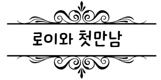
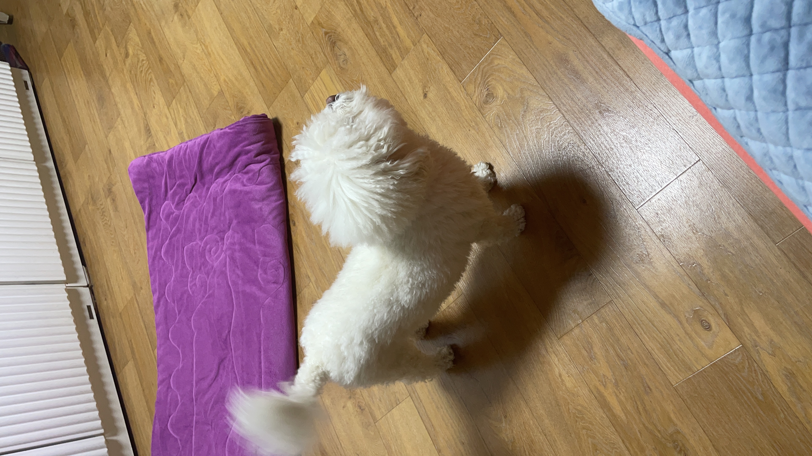
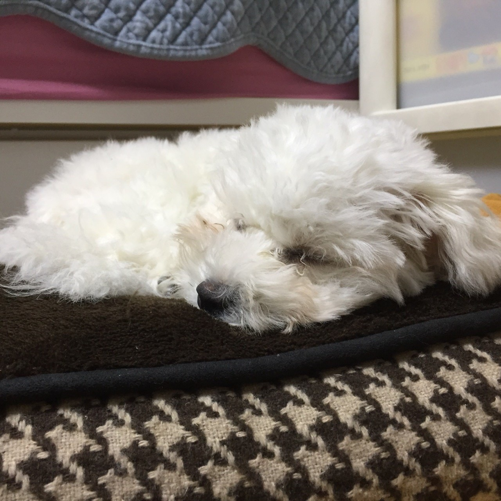
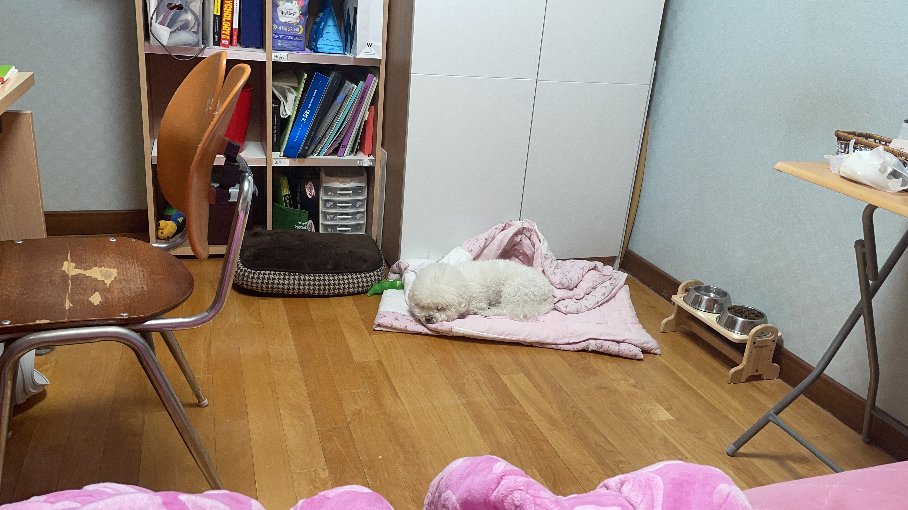
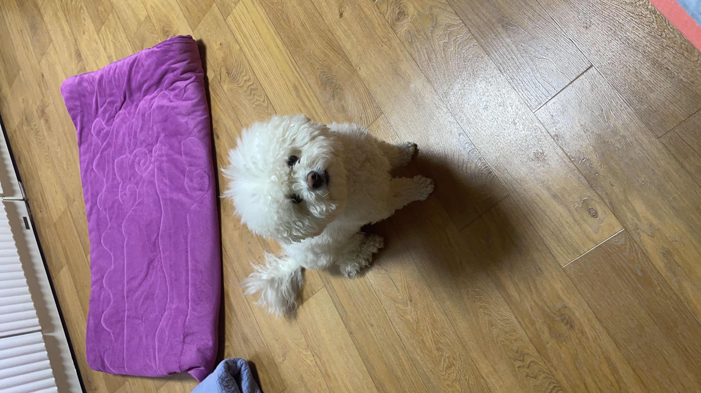

로이와 처음 만난건 2017년 말. 내가 방황하던 시기 엄마가 갑자기 나랑 강아지 보러 가자고 하다니 로이를 덜컥 데려와버렸다. 예전에 강아지를 키우자고 했을때 반대했던 엄마가 왜 갑자기 그런 선택을 한건진 모르겠다. 어쨌든 그렇게 로이를 만나게 되었다.
로이는 처음 만났을때 곤히 자고 있었다. 다른 강아지들이 사람에게 관심을 받기 위해 왕왕 짖고 있을때 로이는 곤히 자고 있는 모습이 차분한 내 모습과 비슷한 것 같아 맘에 들어서 데려오게 되었다. 근데 데려오고 보니 마냥 차분하기만 한 강아지는 아니다. 녀석 날 만나기 위해 일부러 자는 척 한거구나?
로이의 이름은 내가 좋아하는 영화 ‘더폴’의 잘생긴 남자주인공 ‘로이’에서 따왔다. 이름을 잘 지어준 것 같다. 이제는 로이? 하면 뒤돌아서 날 쳐다본다. 자기 이름을 아는지도...